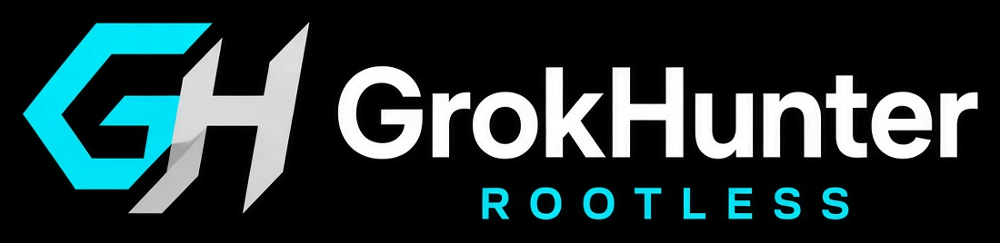

Rootless first
Termux + proot only. Stock Android, warranty intact — no Magisk, recovery, or firmware modules.

Turn unrooted Android into a full AI coding lab. Real Linux toolchains, Grok Build 1.0.5 (TUI + headless), Coding Team multi-agents, Aider, and a low-latency desktop — one installer, no root.
bash <(curl -fsSL https://raw.githubusercontent.com/FineComputer14451/GrokHunter/main/install.sh)Built on termux-nethunter / termux-distro by jorexdeveloper. Not affiliated with xAI, Offensive Security, or jorexdeveloper. Coding lab only.
Why this stack
Learn languages, ship tools, and pair with Grok on device — without rooting Android.
| Need | What you get |
|---|---|
| Real Linux toolchain | apt, gcc, python, node, rust, go inside Kali |
| No root | Stock Android — rootless proot only |
| AI pair-programmer | Grok Build 1.0.5 TUI + headless, agents, skills |
| Multi-agent coding | Coding Team: design → build → harden + specialists |
| Git-native pair | Aider via uv + managed Python 3.12 (works on Kali 3.13) |
| Desktop IDE feel | XFCE + Termux:X11 (nh-x11) |
| Portability | Entire lab lives under Termux |
Features
Overlay on official NetHunter — modular, idempotent, built for mobile pair sessions.
Termux + proot only. Stock Android, warranty intact — no Magisk, recovery, or firmware modules.
Official CLI with fullscreen TUI, headless -p, plan agent, skills, and
stable channel defaults via NetHunter profile.
Benjamin · Lucas · Harper orchestrated with scout, review, fix, and desktop specialists for Design → Build → Harden.
Tone overlays (mobile, design-card, …) and capability roles (architect, builder, …) for Grok Build 1.0.5 subagent resolution.
Full Kali apt: gcc, python, node, rust, go — a real coding lab, not a toy shell.
XFCE + low-latency nh-x11 helper for editors and browsers that feel like a
mini workstation.
aider-grok with secrets.env and grok-4.6. Installer uses uv + managed
Python 3.12 so Kali 3.13 does not break Aider.
grokhunter doctor checks binary, profile, skills, agents, personas,
roles, PATH, secrets, and lab readiness.
Sits on the official NetHunter rootfs. Idempotent install, clean uninstall, modular
lib/.
Stack
Install once with grokhunter skills install — skills, agents, personas, and
roles land where Grok Build 1.0.5 discovers them.
Lab playbooks: grokhunter, pair-programming, aider-grok, x11-desktop, nethunter-recon.
skills-core=3/3
Session types for /config-agents and spawn — Coding Team + specialists.
8 user agents
Tone and card contracts: mobile, concise, design-card, build-card, harden-card, …
8 personas
Capability defaults: architect, builder, reliability, mapper, surgical, …
7 roles
agent = who (benjamin, lucas, scout, …) role = capabilities (architect, builder, mapper, …) persona = tone / cards (mobile, design-card, concise, …)
Agents
Runtime Grok Build agents — pick in /config-agents or spawn by name.
| Agent | Mode | Role |
|---|---|---|
coding-team |
full | Orchestrator — Design → Build → Harden |
benjamin |
plan / read-only | Senior architect, security, mobile constraints |
lucas |
full | Rapid builder — small shippable increments |
harper |
full | Reliability — tests, edge cases, harden cards |
scout |
read-only | Fast codebase / install-flow map |
review |
read-only | Diff / change review |
fix |
full | Surgical one-bug patches |
desktop |
full | Termux:X11 / nh-x11 / proot binds |
overlay · ship · docs |
mixed | Install/cache · version/tag · README/site copy |
models · ci · aider |
full | V9 pickers · ci-unit/Smoke · aider-grok |
session · host · mcp |
full | tmux/resume · Termux vs Kali · grok mcp |
plugin · flow · storage |
full | grok plugin · .rhai workflows · disk/cache |
editor · hook · shell |
full | nvim/micro · /hooks · profile.sh |
grok --agent scout -p "Map install_aider"
grok --agent coding-team
grokhunter plan "Design overlay-only repair"Personas & roles
Personas inject behavioral reminders; roles set capability mode and reasoning effort.
Manage in TUI via /personas and /config-agents.
| Personas | |
|---|---|
mobile | NetHunter / Termux constraints |
concise | Short, scannable output |
shell-first | Scripts & lab tooling bias |
pair | Pair-programming tone |
security-lab | Secrets & installer safety |
design-card | Benjamin-style design card |
build-card | Lucas-style build card |
harden-card | Harper-style harden card |
| Roles | |
|---|---|
architect | read-only · high effort |
builder | full · medium |
reliability | full · high |
mapper | read-only · medium |
code-review | full · high |
surgical | full · medium |
x11-desktop | full · medium |
Install
Requires Termux from F-Droid or GitHub (not Play Store), Android 8+, aarch64 recommended,
and SuperGrok / X Premium+ or an XAI_API_KEY for Grok Build.
bash <(curl -fsSL https://raw.githubusercontent.com/FineComputer14451/GrokHunter/main/install.sh)bash install.sh --full --de xfce --browser chromium \
--with-grok --with-x11 --with-aider --with-v9-modelsgit clone https://github.com/FineComputer14451/GrokHunter.git
cd GrokHunter
bash install.sh --full --de xfce --with-grok --with-x11bash install.sh --overlay-only --with-grok --with-x11 --with-aider-f, --fullFull installation (includes desktop)-m, --miniMini (essential packages)-n, --nanoNano (minimal footprint)--de <desktop>e17 | gnome | i3 | kde | lxde | mate | xfce--browser <name>chromium | firefox | both--with-grokGrok Build ≥ 1.0.5 + profile--with-x11Termux:X11 + nh-x11 helper--with-aiderAider (uv + Python 3.12)--with-v9-models/model chat-expert · multi · auto--with-completionsShell completions + profile--overlay-onlyOverlays only (no rootfs download)--no-de / --no-grok / --no-x11Skip those stagesAfter install
CLI
Also: grok-nethunter fullscreen launcher ·
grok native TUI · aliases via profile (ghd,
ghp, ghsu, …)
grokhunterInteractive fullscreen TUIgrokhunter statusShort status linegrokhunter doctorFull health reportgrokhunter git-identityGitHub-attributable git user.name / emailgrokhunter setupOne-shot: ensure + skills + doctorgrokhunter ensureGrok Build ≥ 1.0.5 + NetHunter profilegrokhunter skills installSkills, agents, personas, roles + wrappersgrokhunter teamLaunch Coding Team agentgrokhunter scout|review|fix|desktopSpecialist agent launchersgrokhunter overlay|ship|docsLab specialists (install / release / docs)grokhunter modeler|ci|aiderModels/V9 agent, CI, Aider (`modeler` ≠ `models` CLI)grokhunter session|host|mcptmux/resume, Termux vs Kali, MCP (`mcp` ≠ `grok mcp`)grokhunter plugin|flow|storageplugins (`plugin` ≠ `grok plugin`), workflows, diskgrokhunter editor|hook|shellnvim/micro, Grok hooks, profile/completionsgrokhunter agents statusInstalled Coding Team agentsgrokhunter models installV9 / 4.6 model pickersgrokhunter ai-smokeSpaceXAI API smoke testgrokhunter install [args]Installer (supports --overlay-only)grokhunter plan "…"Built-in plan agent (1.0.5)grokhunter -p "…"Headless one-shotbash scripts/install_aider.shRepair Aider (uv + 3.12)bash scripts/ci-unit.shLocal unit checksUpgrade to 1.0.9
Already installed? Pull, ensure Grok Build 1.0.5+, refresh skills/agents, install the Kali menu, then doctor.
cd ~/GrokHunter && git pull
bash install.sh --overlay-only --with-completions
grokhunter ensure # binary ≥ 1.0.5 + profile
grokhunter skills install # skills · agents · personas · roles
grokhunter git-identity set # GitHub noreply (no gh CLI required)
grokhunter menu install # Applications → GrokHunter (XFCE)
grokhunter models install # optional /model aliases
grokhunter doctor
grokhunter credits # upstream attributionArchitecture
Design goals: rootless first, coding focus, official Grok binary, idempotent install, mobile-first UX.
No Magisk, HID, or custom recovery
Never rebuilds Kali rootfs or kernels
Safe to re-run; uninstall keeps your projects
FAQ
No. GrokHunter is rootless Termux + proot only. Use Termux from F-Droid or GitHub — not the Play Store.
GrokHunter 1.0.9 targets Grok Build 1.0.5+ (stable). Run
grokhunter ensure to upgrade and apply the NetHunter profile.
SuperGrok / X Premium+ login via grok, or put
XAI_API_KEY in ~/.grok/secrets.env (mode 600). Never commit
secrets.
Expected with plain pip. Use
bash scripts/install_aider.sh — uv installs managed Python 3.12 +
aider-chat. Then aider-grok.
Try NH_X11_LEGACY=1 nh-x11, install the Termux:X11 APK (sharedUid with
GitHub Termux), and see docs/X11-PERFORMANCE.md. Or spawn the desktop
agent.
The product focus is a coding lab. Optional
nethunter-recon skill is scoped for authorized lab/CTF only — not default.
Credits
GrokHunter is an overlay for an AI coding lab. The rootless NetHunter install path depends on work by jorexdeveloper — please support those projects.
| Author / project | Contribution |
|---|---|
| jorexdeveloper | termux-nethunter · termux-distro — rootless NetHunter install + shared engine (GPL-3.0) |
| Termux team |
termux.dev
· app, packages, proot host ·
Termux:X11
for nh-x11
|
| Kali Linux / Offensive Security | Official NetHunter rootfs images + Kali package ecosystem (coding-lab use) |
| xAI | Grok Build agent · Grok models / API · docs.x.ai |
Full statement: CREDITS.md · Not affiliated with xAI, Offensive Security, Termux, or jorexdeveloper — we gratefully build upon their work.
Clone the repo, run the installer, open Grok. Coding Team, Aider, and a full Linux toolchain — ready on unrooted Android.